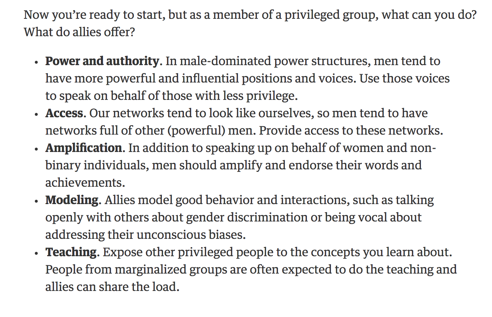

In my last post, I discussed the importance of building your network and some strategies for effectively reaching out. I closed with emphasizing how helpful your peers or people one step ahead of you can be. But there’s a specific area where people with more resources, status, or experience can help you: sponsorship.
What is sponsorship?
When people discuss what they’re seeking from a more senior person in their field, they usually talk about “mentorship.” Generally, mentoring involves offering advice, helping someone adjust to their new job, or giving feedback on their work. Sponsorship, on the other hand, is all about giving people opportunities, whether by funding them, advocating for their promotion, introducing them to important people, or making sure they get assigned to the types of challenging projects that can help them grow.
A lot of articles about sponsorship and mentorship are about finding one at your company, and this is especially important if you work at a larger organization that you want to stay in for many years. Nowadays, however, people (especially in tech) often change companies every few years. The tech community has enough small subpockets that you can start building a positive reputation and sponsors in the larger field who will stay with you through multiple companies.
How do you find a sponsor?
Looking for a sponsor can be very awkward if you try to force it or really need one right now - desperation is rarely endearing. You want to build sponsorship relationships before you need them.
I previously discussed how offering value and building a mutually fulfilling relationship is the best way to network. This applies doubly to sponsorship. If someone sponsors you, they need to be confident you will do a good job, because you’re representing them. For example, if someone recommends you as a speaker for a conference and you never respond to the organizer or you give a clearly unprepared talk, that reflects poorly on the sponsor.
So how can you show someone you’re up for the task? One of the best ways is to have public examples of your previous successful work. It doesn’t have to be evidence of you doing the exact same thing; otherwise, how could you ever get your first opportunity? Mikhil Popov wrote a great post on how to deal with this kind of Catch-22, specifically needing experience as a data scientist to get a job as a data scientist. He said that your experience doesn’t need to be at a job with the title “data scientist”; what experience really stands out is working on an end-to-end data project (gathering, cleaning, modeling, and visualizing). You can show you’ve done this by writing a blog post about how you wrangled real data and the cool analysis you did. Or if you’re interested in speaking at conferences, you can start with a lightning (short) talk at a local meetup and apply for conferences specifically for first-time speakers, such as Deconstruct.
How can you be a sponsor?
The best way to thank those who have helped you is to “pay it forward.” When you start to get more influence and opportunities, it becomes your responsibility to help pull others up behind you. For example, if you’re a seasoned speaker, think about recommending others for opportunities, especially when you can’t go yourself, like Julia Evans recently did:
I get email about a lot of speaking opportunities. if you're looking to give more talks (especially if you're from a marginalized group), reply to this with a link to a video of a talk you're proud of!
— 🔎Julia Evans🔍 (@b0rk) February 6, 2018
For more ideas, Caitlin Hudon has a great twitter thread:
Below are examples of "good guys in tech" and things they have done that have helped my career. I hope others can follow their example.
— Caitlin Hudon👩🏼 💻 (@beeonaposy) August 11, 2017
Some examples she gives include colleagues praising her work in front of her boss, sharing their salary information with her, and promoting the work of women, including by doing something as seemingly small as tweeting about it. When Caitlin started RLadies Austin, she had men reaching out to offer their time, training materials, meeting spaces, and promotion of the meetup.
Sponsorship is important for everyone, but some groups are disproportionality less likely to receive it. For example, research has found that women are overmentored and undersponsored and that men’s mentors are more likely to be senior. Mentorship is great, but often people need opportunity and visibility, not more advice.
If you’re a man and looking for more ways to be an ally to women and non-binary people, my colleagues at Etsy have written a great guide. It’s worthwhile to read the whole thing, but here’s an excerpt about some concrete things you can do1:

My experience
My own career shows how sponsorship can be incredibly important. Some ways that I’ve been sponsored include:
- Getting my foot in the door for my first data science job because Hilary Parker introduced me to her former colleague at Etsy, who referred me.
- Attending my first data science conference, RStudio::conf 2017, thanks to a diversity scholarship from RStudio that allowed me to go to conference and training days for free and included a small travel budget.
- Giving my first data science talk because Jared Lander asked me when, not if, I wanted to speak at his meetup. He believed I could do it before I did and has been a very enthusiastic champion. The talk was recorded and was seen by the Director of the Data Science Center at West Point, who invited me to give a talk there last September (it was awesome).
- Giving my first data science conference talk at Data Day Texas two weeks ago because Hilary Parker and other invited speakers recommended me.
Actions that may not rise to the level of sponsorship can also make a big impact. Specifically, I want to thank Hadley Wickham, for encouraging me to submit my talk to RStudio::conf 2018:
You should submit it to rstudio::conf!
— Hadley Wickham (@hadleywickham) August 24, 2017
And Jim Hester citing me as one of the contributors to the glue documentation.
Want to give a belated shoutout to @jimhester_ and the tidyverse team for providing a really nice experience to a OS newbie:
— Emily Robinson (@robinson_es) November 15, 2017
A month ago, I was trying to use a new function in glue and getting an error it didn’t exist. Colleague was pinging me about same error. 1/
Finally, I am incredibly lucky to have my amazing brother Dave Robinson. He has been my most encouraging data science sponsor and is a tireless advocate for women in data science in general. His tweets on international women’s day got all of those mentioned a lot more followers:
Five amazing #rstats data scientists to follow if you're not already:@juliasilge @JennyBryan @hspter @ma_salmon @robinson_es #IWD2017 pic.twitter.com/OWqi0PzyWM
— David Robinson (@drob) March 8, 2017
Next Time
I’m learning to be cautious predicting what my next posts will be, but I do have a couple ideas I’m drafting, including an introduction to A/B Testing for data scientists and analysts and how to prioritize and respond to the many ad-hoc requests you can get as a data scientist partnering with business teams.
Can you please blog about this
— David Robinson (@drob) February 15, 2018
If you found this post useful, you might be interested in the book on data science careers I wrote with Jacqueline Nolis, “Build Your Career in Data Science,”, avalable for 40% off with code buildbook40%.
Footnotes
What if you’re reluctant to closely mentor women because you’re worried about being accused of sexual harassment or the appearance of impropriety? Read this article from Adam Grant. One key point is hold yourself accountable for parity: if you won’t go to dinner alone with a woman, don’t do it with a man. But much of sponsorship is usually done in a public situation and you can sponsor people without them being aware, such as by raising their name positively in management meetings.↩︎